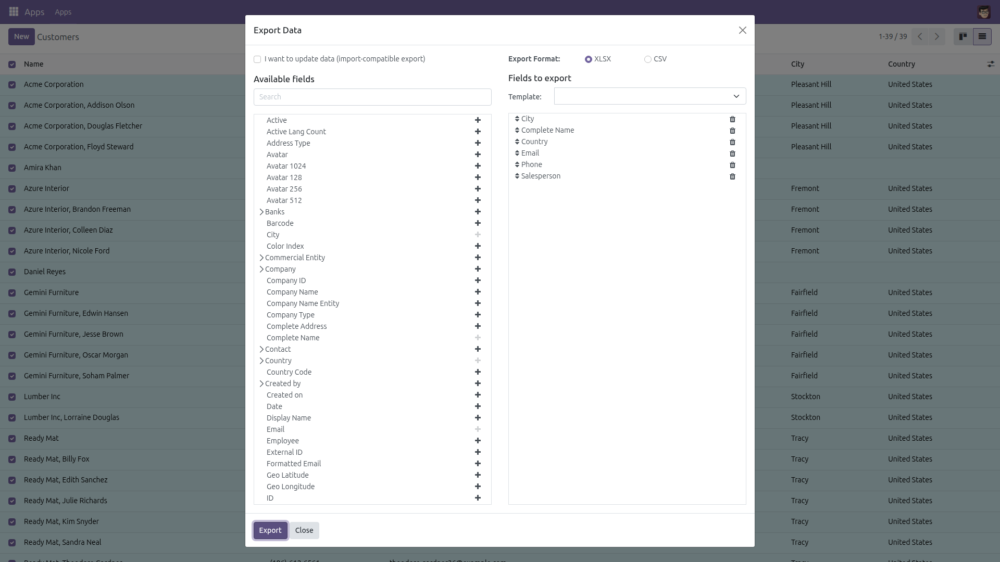
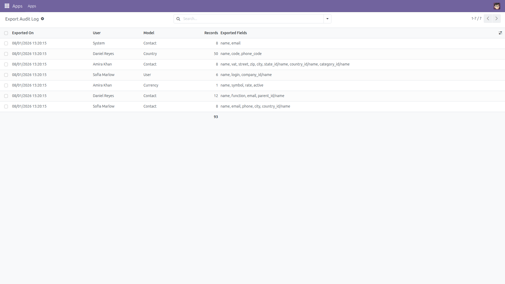
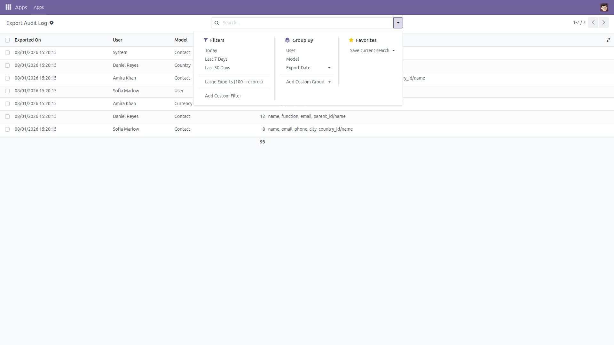
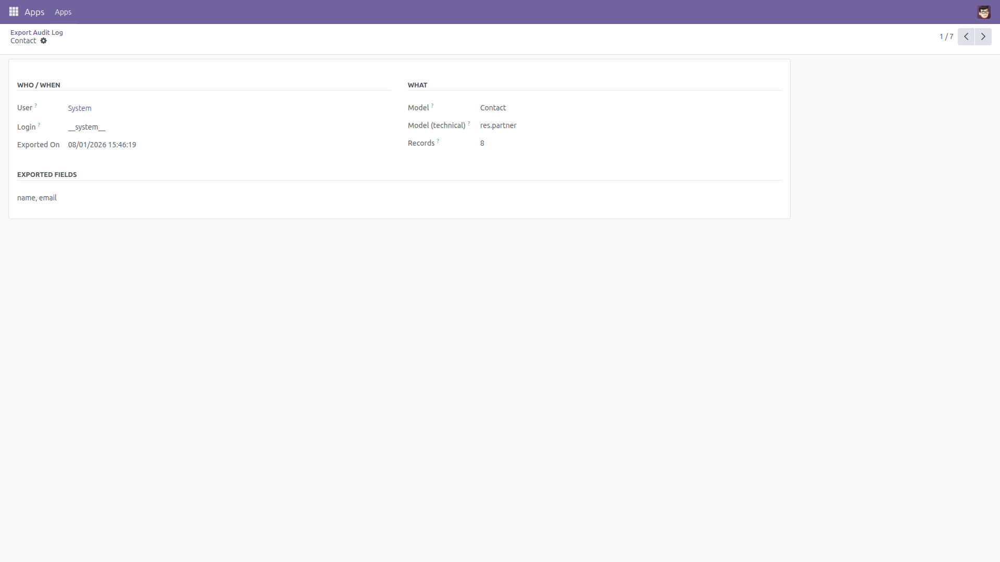
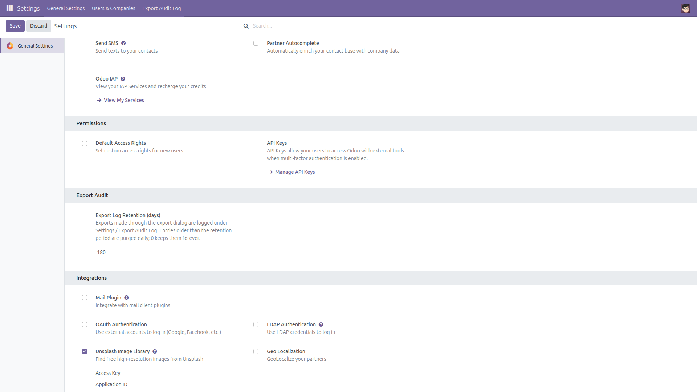

Who exported what, when — a complete trail of data exports.
Export rights in Odoo are all-or-nothing: a user either has the "Allow Export" group or not, and once they have it there is zero trace of what left the database. This module records every export made through Odoo's standard export path — the list-view export dialog and its CSV / XLSX downloads — in a read-only audit log.

Any export made through the standard dialog is recorded the moment it runs.

The audit trail: who exported, which model, how many records, which fields, when.

Ready-made filters (today, last 7/30 days, large exports) and group-by user, model or date.

Each entry keeps the full exported field list. Entries are read-only: nobody can create or edit them.

One setting: how long to keep the log. A daily scheduled action purges older entries; 0 keeps them forever.
data_export_audit_log into your addons path.export_data) are logged: the list-view export dialog and its CSV / XLSX downloads.search_read and friends) and database-level dumps are not captured.Questions, ideas, bug reports? — f.ashraf.dev1@gmail.com